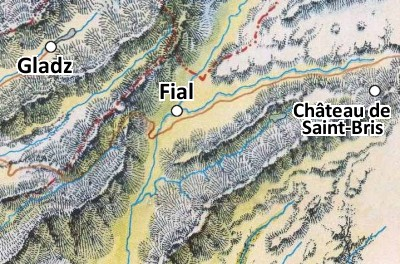

Le château de Saint-Bris
Au sommet d'un promontoire rocheux, au sud du grand duché d'Agramor, se trouve le château de Saint-Bris, dominant la vallée du Saril. Du haut de la tour du donjon, on peut contempler aux alentours la plupart de la vingtaine de villages que le chevalier de Saint-Bris administre avec justesse, dont celui de Fial à pratiquement une journée de marche à l'ouest. Le domaine est délimité au nord par le Parimoc, à l'est par la crête de la chaîne de montagne surplombant la vallée, et à l'ouest par la crête limitrophe avec le comté de Gladz. Le domaine est traversé par une importante route commerciale qui rallie le sud depuis les provinces de Kaoca, Azilian, Agramor ou Egonzasthan.
Initialement, le château n'était qu'une tour qui permettait au duc d'Agramor d'observer les mouvements militaires. Car il est bien connu que la province du duché d'Agramor est sans cesse agitée par de nombreux tumultes entre les seigneurs locaux. Les hommes sont ainsi, ils ne se contentent que rarement de ce qu'ils ont déjà. Puis, au fil du temps, la région étant fertile, de nombreux petits hameaux se sont formés et de petites communautés humaines ont prospéré, loin des intrigues politiciennes.
Ce n'est qu'en 1053 que le fief fut officiellement fondé. Le duc d'Agramor de l'époque le donna au chevalier Honorin de Saint-Bris, un paladin de Torm, en récompense pour sa participation décisive dans la première guerre d'épuration du duché contre les orcs et les gobelins. Honorin était un homme bon et intelligent qui entretint d'excellents rapports avec les villages sur ses terres. Il fit prospérer son territoire en en faisant une plaque tournante du commerce dans la région, percevant entre 10 et 20 % sur toutes les transactions qui avaient lieu sur son domaine, en échange de la protection des voies commerciales. Cette taxe est appelée le champart. Fort de ces nouvelles finances, le château s'étoffa rapidement. En 1102 fut construite une chapelle à l'honneur du dieu Torm. De nos jours, c'est le descendant direct d'Honorin, Anasthore de Saint-Bris, qui assure l'administration du domaine, lui-même étant vassal du duc d'Agramor Uleiric III.
Us et coutumes
Le chevalier de Saint-Bris est le véritable chef en son fief. Il est seul maître à bord... après les dieux. Il a droit de vie et de mort sur toutes les personnes soumises à son autorité, veille à la sécurité de son petit monde, entretient son domaine et entraîne ses hommes. Il a également le droit de créer autant d'impôts qu'il le désire. Voici ceux qui ont cours sur les terres de Saint-Bris :
- Le cens. C'est un loyer payé par les paysans pour exploiter les terres qui appartiennent au chevalier de Saint-Bris.
- Le champart. Pourcentage sur les récoltes, oscillant entre 10 et 20 %.
- La dîme. Réservé au clergé du culte de Torm.
- Les banalités. Taxes sur l'utilisation des bâtiments qui appartiennent au chevalier, comme le four à pain, le moulin à farine ou le pressoir.
Le château, géographiquement isolé, se fait approvisionner par l'ensemble des villages alentours. Il dispose toutefois de son propre point d'eau et d'un four à pain, qui sont à la base de l'alimentation dans la vie médiévale. La vie au château est quant à elle rythmée par les saisons.
Printemps. Les paysans alentours reprennent le travail, labourant et semant les champs du fief. Les baladins repartent sur les routes rejoindre les grandes caravanes marchandes qui vont de ville en ville et de château en château. En effet, l'activité économique et les convois sont quasiment à l'arrêt pendant la période hivernale. Le château a droit à une remise à neuf : toiture et maçonnerie sont retapés tandis que le chevalier de Saint-Bris et sa famille en profitent pour quitter le confinement du château en se retirant dans leur demeure de campagne.
Été. C'est l'époque des pèlerinages, et la chapelle du château est une des étapes importantes pour les fidèles de Torm. Les paysans tondent les moutons, font les premières récoltes et les cueillettes de fruits. Le bailli procède au recensement et à la collecte des taxes.
Automne. Les vendanges, les semailles du blé et la récolte des châtaignes occupent les paysans. L'activité au château bat son plein. Saint-Bris achemine de nombreux convois afin de constituer les réserves pour l'hiver. Les moulins tournent à plein. Pour le chevalier, c'est l'époque agréable de la chasse avec ses compagnons d'armes.
Hiver. Les travaux des serfs sont terminés, les récoltes sont à l'abri dans l'entrepôt du chevalier. Les routes commerciales sont quasiment vides. La vie du château semble tourner au ralenti pendant que la garnison s'entraîne pour tromper l'ennui.
Le château
Illustration originale de Maxime Plasse
1. Entrée. Hormis l'enceinte, la première protection du château est une grande herse en fer qui permet d'empêcher les intrusions. Celle-ci est toutefois généralement levée, sauf en cas de menace évidente. Viennent ensuite les deux battants d'une imposante porte en bois qui nécessitent la force de deux hommes pour être ouverte. Une petite porte dans le battant de droite permet le passage d'une personne, mais pas d'une monture.
BORIN, LE CHASSEUR DE TRÉSOR
Borin n'a pas choisit au hasard le fief de Saint-Bris. Il est en effet en possession d'une carte indiquant un ancien repaire orc datant d'avant la première guerre d'épuration. Mais malheureusement, l'endroit exact lui échappe encore. Lorsqu'il vient au château, il passe toujours un peu de temps à l'auberge, attentif aux histoires qui s'y racontent. Désespérément, il attend la moindre allusion à une « pierre rouge » qui le mettrait sur le chemin d'un trésor... qu'il rêve conséquent...
2. Tours de garde. En permanence se trouvent ici au moins deux soldats pour gérer les entrées et surveiller la route d'accès au château. Tout nouveau venu fait l'objet d'un interrogatoire sommaire afin de s'enquérir des raisons de son arrivée, et en cas de doute ils font mander leur capitaine.
3. Cour principale. Au centre de celle-ci se trouve un puits. L'eau est en effet vitale en cas de siège, et c'est tout naturellement que le puits fut l'une des premières installations construites lors de l'édification des fortifications. Les serviteurs et les soldats s'y succèdent à longueur de journée pour puiser l'eau nécessaire à leur hydratation et à l'abreuvement des animaux. Le nain Borin « le fort » est le seul non humain habitué des lieux. Depuis deux ans maintenant, il s'est installé dans un bois à quelques encablures et fait office de charpentier. Devant son efficacité, le chevalier lui a octroyé la charge officielle contre une taxe. Il travaille donc presque tous les jours au château.
4. Écurie. Elle accueille les chevaux des soldats et ceux des éventuels voyageurs. Une quinzaine de chevaux permettent d'assurer l'ensemble des patrouilles.

Olwin Rafenor
5. Chapelle. Cette chapelle a été érigée en 1102 à la gloire de Torm. C'est d'ailleurs un lieu de pèlerinage pour les fidèles de ce dieu. Le bâtiment est divisé en deux parties. La première est la salle des offices, qui sont menés par le chapelain Olwin Rafenor et auxquels assiste systématiquement la famille de Saint-Bris. Le chevalier sait ce qu'il doit à l'Église du dieu du courage et du sacrifice de soi. Une coquette partie des revenus du domaine est même régulièrement investie dans l'embellissement de la chapelle, et des artistes de renom ont participé à la décoration de celle-ci. La deuxième partie sont les appartements privés du chapelain, qu'il partage avec un jeune acolyte. Ce dernier fait pousser dans la cave du bâtiment une espèce de champignon luminescent qui permet d'éclairer les pièces du donjon en lieu et place des bougies. Le chevalier de Saint-Bris envisage d'ailleurs dans le futur de cultiver ce champignon à plus grande échelle et, qui sait, d'en exporter la production dans les provinces voisines. Le chapelain de la petite communauté, Olwin Rafenor, a une quarantaine d'années. C'est un homme bon qui veut voir le bien en toute chose. Clerc de la Connaissance, grand amateur d'enluminures, il est d'un tempérament jovial et toujours ouvert au dialogue. Toutefois, Olwin Rafenor quitte parfois le château d'un air grave. Nul ne sait où il part, mais tous constatent que le chevalier consent à cette disparition. Ce dernier se rend en fait dans une clairière sacrée où il y retrouve un esprit de la justice incarné en licorne qui l'aide à prendre certaines décisions délicates. C'est sur son conseil que le chevalier décida de soutenir Dame Arcienne contre son régisseur à Fial. Olwin revient cependant de plus en plus troublé de ses rencontres, et lors de ses entretiens avec le chevalier il parle maintenant de la licorne comme d'un oracle sur un ton fasciné, ce qui commence à inquiéter Anasthore.
6. Four à pain. Comme son nom l'indique, c'est ici que se produit le pain, base de l'alimentation de cette petite communauté. Le boulanger vit dans cette maison avec sa femme et ses huit enfants. Les deux plus grands font partie du corps des soldats de la garnison, et sa fille aînée travaille à l'auberge.
7. Tour Nord. Permet d'observer les mouvements dans la vallée en contre-bas.
8. Logement des serviteurs. Ici sont logés les serviteurs du château, une dizaine de personnes, et leurs enfants. Les chambres sont moins confortables que dans les quartiers du chevalier, mais tout y est pour assurer un minimum de confort. Un petit poêle au bois permet de se chauffer pour lutter contre les froids de l'hiver.
ORLANDO, LE TÉMOIN GÊNANT
Un soir, alors qu'il était encore au service du duc, Orlando fut témoin du meurtre d'un membre du Gant de Saris au chapitre de Goracht. Les deux assaillants masqués ont fui à son arrivée, abandonnant le paladin qui, dans un dernier râle, confia au jeune brasseur son mouchoir ensanglanté, lequel contenait un pendentif arraché lors du combat. Craignant pour sa vie, car il reconnut le blason d'une grande famille noble d'Agramor, Orlando chercha rapidement à s'installer loin de la capitale.
9. Auberge du Pré aux Rochers. C'est le lieu de passage indiqué pour tous les étrangers, marchands ou aventuriers, qui parcourent le domaine de Saint-Bris. Vu que le château est la plaque tournante du commerce au niveau du fief, l'auberge est souvent pleine lorsque la bonne saison est là et que les cols sont franchissables. Ce n'est pas une enseigne luxueuse mais il y fait bon manger. La carte est somme toute assez sommaire mais permet de goûter aux spécialités locales : le crock (deux tranches de pain enrobant une tranche de lard et une de fromage) et la carabistouille (ragoût de bœuf avec une mijotée de légumes). L'établissement est mené par le brave Orlando Tenaos. C'est un trentenaire qui, après quelques années comme brasseur chez le duc d'Agramor, a décidé avec ses économies de monter sa propre affaire. Selon ses dires, ses pas l'ont mené au domaine de Saint-Bris alors qu'il allait retrouver un cousin. Or l'ancien tavernier du château venait de mourir subitement quelques jours auparavant, et l'occasion faisant le larron, le chevalier de Saint-Bris fut heureux de trouver aussi rapidement quelqu'un pour le remplacer. C'est ainsi que depuis le début de l'année Orlando dirige l'auberge du Pré aux Rochers, tout en aidant les paysans alentours à brasser la bière.
10. Remparts. Ces murs de quinze pieds de haut assurent une solide protection contre d'éventuels agresseurs. La situation géographique du château, au sommet d'une falaise rocheuse, accroît d'autant plus ce sentiment de citadelle imprenable.
11. Cour intérieure. N'entre dans cette partie du château que le personnel autorisé. Deux soldats en surveillent l'entrée depuis la cour principale.
12. Entrepôt et écurie. La plupart des fournitures et des réserves sont entreposées ici, tout comme le fruit des transactions commerciales. Le stock est géré par l'intendant du château. Les chevaux de la famille de Saint-Bris sont également gardés ici. Gaspard Lontanin, jeune homme ambitieux de 25 ans, est l'intendant de Saint-Bris qui gère les finances du fief. Ancien comptable pour un riche établissement financier d'Egonzasthan, il préféra aller quérir un métier où il pourrait mettre en exergue son sens de la négociation et de la gestion de biens. Le chevalier de Saint-Bris lui doit beaucoup. Gaspard a en effet un sens inné des affaires et, depuis son arrivée, les coffres n'ont jamais été aussi pleins. Peut-être qu'un jour le fief de Saint-Bris sera trop petit pour son ambition, mais, en attendant, c'est un homme respecté et craint par les serviteurs du château. C'est un perfectionniste qui ne tolère pas la moindre erreur.
Le capitaine Guillaume Sildar
13. Garnison. Les soldats du château, une trentaine d'hommes dont les familles vivent dans les villages alentours, résident ici. La cohésion faisant la force d'une troupe, l'ambiance qui y règne est fraternelle. Peu sont véritablement aguerris, mais tous sont bien entraînés, et cela suffit à impressionner la plupart des brigands de grand chemin. Une réserve contient quelques armes au cas où il faille équiper les serviteurs. Guillaume Sildar, le capitaine de ces soldats, est un ancien mercenaire de 42 ans qui en eut un jour assez de louer ses services aux différents seigneurs d'Agramor. La paie était bonne et régulière, tant les conflits ne cessaient de s'enchaîner, mais le désir de vivre une existence moins remuante, voire même de fonder un foyer, le poussa à rechercher une situation plus stable. Il intégra tout d'abord les rangs comme simple soldat et, ses compétences martiales étant bien au-dessus du lot, il fut rapidement promu capitaine, à la tête de cette garnison qui à l'origine était davantage composée de fermiers que de véritables hommes d'armes. Vrai meneur d'hommes, il oblige ses troupes à un entraînement soutenu et participe quelquefois aux patrouilles. Le fait qu'il s'impose à lui-même la discipline qu'il impose aux autres lui vaut l'affection de ses hommes. C'est maintenant un fidèle de Torm.
14. Dépendance. Dans cette maison vivent trois personnes. Guillaume Sildar, le capitaine de la garnison de Saint-Bris, Gaspard Lontanin, le jeune intendant du château, et le forgeron Grakus Bernoldar.
15. Jardin. Le cuisinier de Saint-Bris, Théodore Fermol, cultive ici de nombreux fruits et légumes qui servent à l'alimentation de la famille du chevalier et aux soldats. C'est aussi, pour son malheur, le terrain de jeu favori du jeune fils du chevalier.
Grakus Benoldar
16. Forge. On y fabrique l'armement de base des soldats, mais le matériel n'est objectivement pas de grande qualité. En fait, c'est plus un atelier de maréchal-ferrant que de réel forgeron. Les gradés préfèrent d'ailleurs acheter leur matériel chez Thron, le forgeron de Fial. Nichée au-dessus, la tour Ouest permet de surveiller les alentours. Grakus Benoldar, le forgeron, est un célibataire proche de la quarantaine mais physiquement déjà usé. Il ne s'illustre pas spécialement par son talent de forgeron, mais sait s'y prendre avec les chevaux. On dit qu'il leur parle pour les calmer. Excellent dresseur, il n'est pas spécialement respecté par les soldats car il semble préférer la compagnie des chevaux plutôt que celle des hommes. Il n'est donc pas rare d'entendre des quolibets à son égard, mais personne ne se moquera de lui en présence du chevalier de Saint-Bris, qui apprécie beaucoup l'homme.
17. Demeure du chevalier. Au rez-de chaussée de ce bâtiment on trouve une grande salle de banquet et la cuisine. La grande salle est l'endroit le plus fréquenté pendant l'hiver, lorsque les cols sont enneigés et que les convois de marchandise sont arrêtés. Les soldats viennent s'y réchauffer en prenant un bol de soupe ou de ragoût tandis que le cuisinier s'affaire à préparer de fastueux banquets pour le chevalier et les représentants des villages alentours. Des réunions d'ordre politique y ont également fréquemment lieu afin d'administrer au mieux le fief du chevalier, comme lorsque Saint-Bris rencontre les chefs des villages de son fief pour leur rappeler leurs obligations et établir de nouveaux accords. Au premier étage, plusieurs chambres accueillantes. Rien de fastueux, mais elles disposent de tout le mobilier nécessaire. Seuls les invités de marque ou les personnes importantes y logent toutefois. Théodore Fermol est l'homme qui mitonne les petits plats pour la famille du chevalier. Fils de l'ancien cuisinier du château, il prit comme la tradition familiale le voulait la suite de son père, que l'on peut toujours apercevoir rôdant dans la cuisine même si personne ne comprend plus ce qu'il dit. Son fils garde d'ailleurs souvent un œil sur lui pour éviter un drame en cuisine. Le capitaine Guillaume a par exemple failli suffoquer un jour en mangeant un plat dans lequel l'ancien cuisinier avait rajouté à l'insu de Théodore une quantité d'épices conséquente. Le malheureux dû vider trois pichets d'eau pour contenir le feu qui brûlait en lui.
Viviane
18. Donjon. Véritable cœur du château, c'est ici que le chevalier de Saint-Bris réside avec sa famille. En sous-sol, quelques cachots actuellement inutilisés et un passage secret qui sert d'issue de secours aux gens du château et qui débouche dans la forêt à deux lieues de là. Seul le chevalier, sa femme et le capitaine des soldats en connaissent l’existence. Aux étages, diverses chambres et un formidable point de vue sur la vallée depuis le sommet. Anasthore de Saint-Bris, fier chevalier aux cheveux blond mi long, a hérité du domaine familial à 27 ans, suite au décès accidentel de son père lors d'une chute. Aujourd'hui il en a dix de plus et tente d'administrer avec justice son fief. Il commence toutefois à être préoccupé par la situation du village de Fial, suite à la réapparition d'Anne Arcienne avec sa lettre de cachet signée par le duc d'Agramor. Marié et père d'un jeune garçon et d'une fille adolescente, il aime se retirer au printemps dans sa résidence secondaire au fond de la vallée, appréciant de retrouver les charmes de la nature. Paladin dévoué au dieu Torm, comme tous ses ancètres, c'est un homme juste qui garde son sang-froid en toute circonstance, et ce caractère fait qu'il est apprécié par ses sujets. Demoiselle Viviane, âgée de 17 ans, premier enfant du chevalier de Saint-Bris, a un caractère bien prononcé. C'est une jolie jeune fille et elle le sait. Elle est de nature charmeuse et séductrice, cherchant à monter socialement par tous les moyens. Lors de la visite de personnages importants au château, il n'est pas rare de la voir minauder à proximité. Vêtue d'atours très féminins et « osées », elle cherche à attirer dans ses filets quelqu'un qui pourrait lui permettre de s'élever encore plus haut. Et gare à celui qui lui résisterait ; la fille est une langue de vipère et a la rancune tenace. Elle n'hésitera pas à monter les coups les plus tordus pour se venger.
Écrit par Arsenic, revu par blueace et TomLG